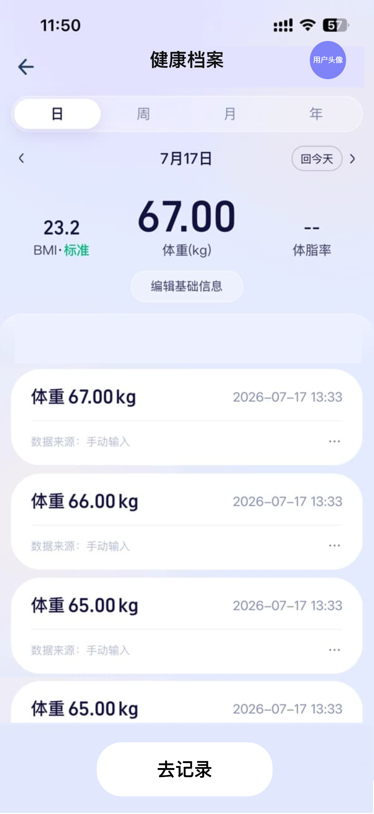
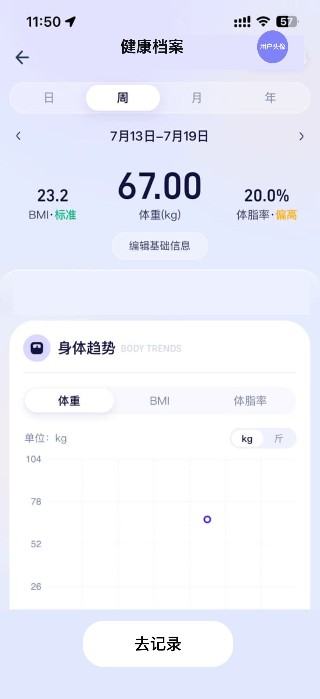
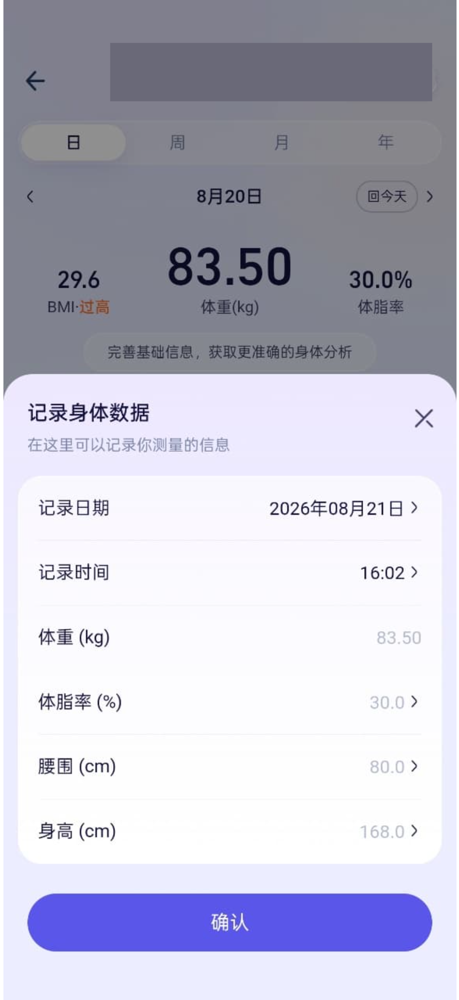
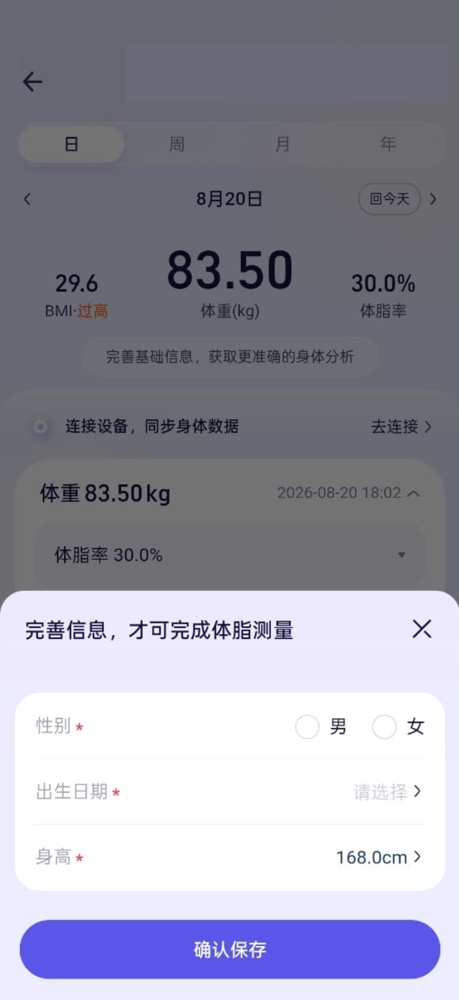
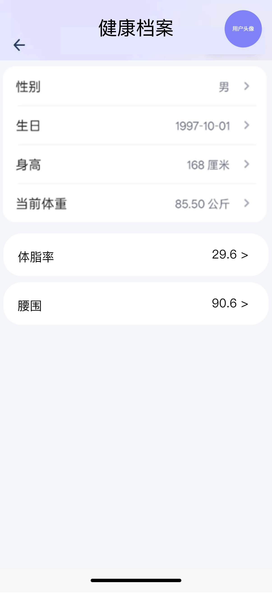

| 项目 | 内容 |
|---|---|
| 项目名称 | 绿韵家App「数智-健康档案」功能需求 |
| 文档版本 | V1.0 |
| 创建日期 | 2026-09-01 |
| 文档状态 | 草稿 / 待评审 |
| 产品负责人 | ⚠️ 待确认 @产品负责人 |
| 技术Owner | ⚠️ 待确认 @研发负责人 |
| 测试负责人 | ⚠️ 待确认 @测试负责人 |
| 版本号 | 修订日期 | 修订人 | 修订内容简述 | 状态 |
|---|---|---|---|---|
| V1.0 | 2026-09-01 | PM | 初版：基于16张「数智」原型截图，聚焦健康档案模块（数智入口、健康档案详情、日/周/月/年视图、记录身体数据、基础信息完善）补全交互规则与PRD。 | 草稿 |
| V1.1 | 2026-09-01 | PM | 修订：① 全量身体数据精度统一至小数点后1位；② 各指标输入范围给定常见人类占位区间（体重2.0~300.0kg/身高30.0~250.0cm/体脂率2.0~75.0%/腰围30.0~200.0cm）；③ 记录弹窗修改身高同步更新基础信息；④ KPI基线给定占位（日活≥15%、完善率≥60%）；⑤ 新增§5.4埋点需求（本期事件清单）；⑥ 改为「一天一条记录、修改覆盖、删除物理删除」模型。 | 草稿 |
绿韵家App正在将原有小程序「数智」能力升级为以AI健康助手为核心的健康档案中心。当前原型已画出首页入口、健康档案详情、记录弹窗等界面，但缺少具体的交互规则与边界条件，尤其是：
| 目标维度 | 具体指标/描述 | 优先级 |
|---|---|---|
| 记录闭环 | 用户在健康档案任何时间维度下都能清晰看到当天是否有记录，并一键补录 | P0 |
| 数据可读 | 日/周/月/年切换后，顶部关键指标与下方趋势/列表展示口径一致、无歧义 | P0 |
| 体验简洁 | 记录操作路径短，删除后可直接重新录入，不强制编辑旧记录 | P1 |
| 指标 | 说明 | 目标 |
|---|---|---|
| 健康档案日活跃率 | 进入健康档案的用户中，当日产生至少一条记录的占比 | ≥ 15%（占位基线，待产品负责人确认） |
| 记录完成率 | 点击「去记录」后成功保存记录的比例 | ≥ 95% |
| 基础信息完善率 | 查看BMI/体脂率的用户中，已完善性别/生日/身高的占比 | ≥ 60%（占位基线，待产品负责人确认） |
「数智-健康档案」功能链路由以下页面/弹窗组成：
图1：数智首页，顶部AI助手欢迎区+4个AI能力入口（买/看/省/选）
沿用现有功能。
涉及终端明细：App端（iOS/Android）。
界面元素：顶部标题「数智」；AI助手欢迎文案「Hi~ 我是你的AI助手」；四个入口卡片：AI帮你买、AI帮你看、AI帮你省、AI帮你选。
交互：点击「AI帮你看」进入数智对话页；点击其他入口进入对应AI能力页。本期健康档案仅把数智首页作为入口引用，不改变其现有逻辑。
图2：数智对话页，底部快捷入口含「健康档案」「健康盒子」
沿用现有功能。
涉及终端明细：App端（iOS/Android）。
界面元素：顶部标题「数智」+返回按钮+菜单按钮；中部对话区；底部输入区（按住说话/相机/键盘切换）；底部快捷标签「健康档案」「健康盒子」。
交互：点击「健康档案」标签跳转至健康档案详情页；点击「健康盒子」跳转至健康盒子页（不在本期范围）。

图3：健康档案详情页-日视图，展示当天记录列表

图4：健康档案详情页-周视图，展示身体趋势图
需求影响范围：本期重点补全日/周/月/年切换规则、当天无记录空状态、记录删除交互。影响健康档案详情页的数据展示与操作逻辑。
涉及终端明细：App端（iOS/Android）。
界面与展示规则：
| 字段/区域 | 需求说明 | 备注 |
|---|---|---|
| 页面标题 | 顶部导航栏居中显示「健康档案」，左侧返回按钮，右侧用户头像 | 沿用现有 |
| 时间维度Tab | 日 / 周 / 月 / 年 四个Tab，默认选中「日」 | 切换时保持当前日期所在周期 |
| 日期导航 | 左右箭头切换上/下一周期，中间显示当前周期范围，「回今天」按钮返回今日周期 | 日视图显示「X月X日」；周视图显示「X月X日-X月X日」；月视图显示「X月」；年视图显示「X年」 |
| 顶部指标区 | 左侧BMI+等级标签；中间体重（kg）大数字；右侧体脂率。所有指标数值统一展示与存储为小数点后1位（如 67.0、23.2、20.0）。日视图取当日唯一记录值；周/月/年视图取该周期结束日那条记录值 | 若无记录则显示「--」；精度1位小数 |
| 编辑基础信息按钮 | 位于指标区下方，点击跳转基础信息编辑页或弹窗 | 必填项未填时按钮可高亮提示 |
| 记录列表（日视图） | 展示当天唯一一条身体数据记录（按记录日期唯一）；点击该记录进入记录弹窗（编辑/覆盖模式） | 展示数值、时间、数据来源；一天仅保留一条 |
| 身体趋势（周/月/年视图） | 展示体重/BMI/体脂率随时间变化曲线，可切换指标与单位（kg/斤） | 取该周期内各日唯一记录点（一天一条） |
| 空状态 | 当天/当周/当月/当年无记录时，中部展示空插画与文案，底部保留「去记录」按钮 | 详见4.3.3 |
| 去记录按钮 | 页面底部固定悬浮/置底大按钮，文案「去记录」 | 点击唤起记录弹窗 |
业务逻辑与边界条件：
| 场景 | 展示内容 | 用户操作 |
|---|---|---|
| 日视图当天无记录 | 顶部体重显示「--」，BMI/体脂率显示「--」；中部空插画+文案「今天还没有记录哦」；底部「去记录」按钮 | 点击「去记录」弹出记录弹窗 |
| 周/月/年视图该周期无记录 | 趋势图区域展示空插画+文案「本周/本月/本年还没有记录哦」；底部「去记录」按钮 | 点击「去记录」弹出记录弹窗，记录日期默认落在当前周期内最近一天 |
| 功能名称 | 功能说明 | 备注 |
|---|---|---|
| 返回 | 返回上一级页面 | 沿用现有 |
| 日期切换（左/右箭头） | 切换到上/下一日或上/下一周期 | 无边界限制，可无限前后翻 |
| 回今天 | 快速回到包含今日的周期 | 日视图回到今日，周视图回到本周 |
| 日/周/月/年Tab | 切换时间维度 | 切换后保持当前日期所在周期 |
| 编辑基础信息 | 进入基础信息编辑页/弹窗 | 见4.5 |
| 去记录 | 唤起记录身体数据弹窗 | 当日已存在记录时为「编辑/覆盖」模式（预填当日记录）；当日无记录时为「新建」模式，见4.4 |
| 删除（左滑） | 删除当日唯一记录 | 物理删除，二次确认，删除后不可恢复 |
| 字段名称 | 取值逻辑说明 |
|---|---|
| 体重 | 取《用户身体数据记录表》.weight 字段，单位kg，按记录日期取唯一一条；展示保留1位小数 |
| 体脂率 | 取《用户身体数据记录表》.body_fat_rate 字段，按记录日期取唯一一条；展示保留1位小数 |
| 腰围 | 取《用户身体数据记录表》.waistline 字段，按记录日期取唯一一条；展示保留1位小数 |
| BMI | 根据最新体重与身高计算：BMI = 体重(kg) / (身高(m))^2，计算结果保留1位小数 |
| BMI等级 | 根据BMI值与性别、年龄匹配《BMI分级标准表》得出「偏瘦/标准/偏高/过高」 |
| 记录时间 | 取《用户身体数据记录表》.record_time 字段，展示格式 HH:mm |
| 数据来源 | 固定显示「手动输入」，本期不支持设备同步 |

图5：记录身体数据弹窗，可录入日期、时间、体重、体脂率、腰围、身高
需求影响范围：本期新增弹窗，用于手动录入身体数据。录入后实时影响健康档案详情页展示与BMI计算。
涉及终端明细：App端（iOS/Android）。
界面与展示规则：
| 字段/区域 | 需求说明 | 备注 |
|---|---|---|
| 弹窗标题 | 「记录身体数据」 | 顶部关闭按钮 X |
| 记录日期 | 默认选中当前日期，点击唤起日期选择器 | 可补录历史日期，不可选择未来日期 |
| 记录时间 | 默认当前时间，点击唤起时间选择器 | 精确到分钟 |
| 体重（kg） | 必填，数字输入框，默认带入最近一次体重值 | 输入范围 2.0~300.0，最多1位小数（常见人类占位值，待产品确认） |
| 体脂率（%） | 选填，数字输入框，默认带入最近一次体脂率值 | 输入范围 2.0~75.0，最多1位小数（常见人类占位值，待产品确认） |
| 腰围（cm） | 选填，数字输入框，默认带入最近一次腰围值 | 输入范围 30.0~200.0，最多1位小数（常见人类占位值，待产品确认） |
| 身高（cm） | 选填，数字输入框，默认带入用户基础信息身高 | 保存时同步更新《用户基础信息表》.height（覆盖原值，影响BMI/体脂率计算）；输入范围 30.0~250.0，最多1位小数（占位） |
| 确认按钮 | 底部固定大按钮，默认置灰，必填项填写完整且校验通过后高亮可点击 | 点击后保存并关闭弹窗 |
业务逻辑与边界条件：
| 区域 | 字段 | 功能逻辑说明 | 备注 |
|---|---|---|---|
| 基础信息 | 记录日期 | 日期选择器，默认今日，不可选未来 | 必填 |
| 基础信息 | 记录时间 | 时间选择器，默认当前时间，精确到分钟 | 必填 |
| 身体数据 | 体重（kg） | 数字输入框，默认最近一次体重，范围2.0~300.0kg，最多1位小数（占位） | 必填 |
| 身体数据 | 体脂率（%） | 数字输入框，默认最近一次体脂率，2.0~75.0%，最多1位小数（占位） | 选填 |
| 身体数据 | 腰围（cm） | 数字输入框，默认最近一次腰围，30.0~200.0cm，最多1位小数（占位） | 选填 |
| 身体数据 | 身高（cm） | 数字输入框，默认基础信息身高，30.0~250.0cm，最多1位小数（占位） | 选填；保存时同步更新基础信息身高 |
| 功能名称 | 功能说明 | 备注 |
|---|---|---|
| 关闭 | 点击关闭弹窗，不保存 | 滑动/点击蒙层也可关闭 |
| 确认 | 校验并保存记录 | 必填项未填或校验未通过时置灰 |

图6：完善基础信息弹窗，必填性别、出生日期、身高

图7：基础信息编辑页，展示性别、生日、身高、当前体重、体脂率、腰围
需求影响范围：本期明确基础信息的触发条件与保存规则。基础信息用于BMI/体脂率计算，不强制首次进入填写。
涉及终端明细：App端（iOS/Android）。
界面与展示规则：
| 字段/区域 | 需求说明 | 备注 |
|---|---|---|
| 弹窗标题 | 「完善信息，才可完成体脂测量」或「完善基础信息」 | 关闭按钮 X |
| 性别 | 单选：男 / 女，必填 | 默认未选中 |
| 出生日期 | 日期选择器，必填 | 默认未选择，格式 YYYY-MM-DD |
| 身高 | 数字输入框，单位cm，必填 | 范围 30.0~250.0，最多1位小数（常见人类占位值，待产品确认） |
| 确认保存按钮 | 底部固定大按钮，必填项完整后高亮可点击 | 保存后关闭弹窗 |
业务逻辑与边界条件：
| 区域 | 字段 | 功能逻辑说明 | 备注 |
|---|---|---|---|
| 基础信息 | 性别 | 单选按钮，男/女 | 必填 |
| 基础信息 | 出生日期 | 日期选择器，格式YYYY-MM-DD | 必填 |
| 基础信息 | 身高（cm） | 数字输入框，30.0~250.0cm，最多1位小数（占位） | 必填 |
| 字段名称 | 取值逻辑说明 |
|---|---|
| 性别 | 取《用户基础信息表》.gender 字段 |
| 出生日期 | 取《用户基础信息表》.birthday 字段 |
| 身高 | 取《用户基础信息表》.height 字段，单位cm |
| 项 | 要求 |
|---|---|
| 页面加载 | 健康档案详情页首屏加载时间 ≤ 1.5s（含记录列表/趋势图数据） |
| 记录保存 | 点击确认到保存完成 ≤ 800ms |
| 切换维度 | 日/周/月/年Tab切换无白屏，骨架屏或缓存过渡 |
| 项 | 要求 |
|---|---|
| App版本 | 支持绿韵家App当前主版本及上一版本；老版本不展示新入口时按已有逻辑处理 |
| 数据兼容 | 老用户已有身体数据记录需保留，新字段（如腰围）为空时展示「--」 |
| 项 | 要求 |
|---|---|
| 数据权限 | 用户只能查看和操作自己的身体数据记录 |
| 删除不可逆 | 删除记录后后端物理删除（本需求约定：一天仅一条记录，删除即彻底移除该日记录，不保留历史），前端提示「删除后不可恢复」 |
本需求埋点事件与属性遵循《绿韵家埋点规范》（友盟+ 事件体系）。规范在线文档待补充链接后更新此处；本期事件英文名与参数为建议命名，最终须与绿韵家现有埋点规范对齐，禁止直接套用。
本期聚焦「健康档案」链路，涉及以下用户行为事件（精简清单，仅列本期用到的事件）：
| 事件英文名（建议） | 事件显示名 | 所属层 | 平台 | 触发时机 | 必含上报参数（友盟中文名） | 备注 |
|---|---|---|---|---|---|---|
| page_view | 健康档案页曝光 | L1 基础层 | App | 健康档案详情页加载完成 | 页面名称、来源页面 | 来源页面含：数智首页/数智对话页 |
| button_click | 点击去记录 | L1 基础层 | App | 点击「去记录」按钮 | 页面名称、按钮名称、记录模式 | 记录模式：新建/覆盖 |
| popup_view | 记录弹窗曝光 | L1 基础层 | App | 记录身体数据弹窗展示 | 弹窗名称、触发来源 | 触发来源：底部去记录/补录 |
| popup_close | 记录弹窗关闭 | L1 基础层 | App | 记录弹窗关闭（确认/取消/蒙层） | 弹窗名称、关闭方式、用户选择 | 用户选择：保存/取消 |
| record_body_data_submit | 提交身体数据记录 | L2 业务层 | App | 记录弹窗「确认」且校验通过 | 操作类型、是否含体脂率、是否含腰围、是否同步身高 | 操作类型：新增/覆盖 |
| record_body_data_delete | 删除身体数据记录 | L2 业务层 | App | 二次确认删除当日记录 | 记录日期、删除类型 | 删除类型：物理删除 |
| profile_update | 更新基础信息 | L2 业务层 | App | 完善/编辑基础信息保存成功 | 编辑区域、编辑字段列表、是否同步身高 | 编辑字段列表：性别;出生日期;身高 |
| 编号 | 验收场景 | Given（前提） | When（操作） | Then（结果） |
|---|---|---|---|---|
| AC-01 | 当天无记录进入健康档案 | 用户今日未记录任何身体数据 | 进入健康档案详情页 | 顶部体重/BMI/体脂率显示「--」；中部展示空状态插画与「今天还没有记录哦」；底部显示「去记录」按钮 |
| AC-02 | 当天有记录进入健康档案 | 用户今日已录入体重67.0kg、体脂率20.0% | 进入健康档案详情页 | 顶部显示体重67.0、BMI 23.2（标准）、体脂率20.0%（均保留1位小数）；下方展示当日唯一记录 |
| AC-03 | 切换周视图 | 用户进入健康档案，默认日视图 | 点击「周」Tab | 顶部显示本周结束日最新体重；下方展示本周身体趋势图（体重曲线） |
| AC-04 | 补录历史记录 | 用户在日视图选中昨日 | 点击「去记录」，日期选择昨日，输入体重66kg，点击确认 | 弹窗关闭，详情页刷新，昨日记录列表新增一条体重66kg记录 |
| AC-05 | 修改记录覆盖当日 | 用户今日已记录体重67.0kg | 点击「去记录」，弹窗预填67.0，改为66.5，点击确认 | 弹窗关闭，当日记录被覆盖为66.5，列表仍仅1条记录，顶部指标更新 |
| AC-09 | 删除当日记录（物理删除） | 用户今日已记录体重67.0kg | 左滑记录，点击删除并二次确认 | 后端物理删除该日记录，页面切换为空状态+去记录按钮，该日不再有记录 |
| AC-06 | 缺少基础信息查看BMI | 用户未填写身高 | 进入健康档案查看BMI | 弹出「完善信息，才可完成体脂测量」弹窗，要求填写性别/生日/身高 |
| AC-07 | 校验未来日期 | 用户打开记录弹窗 | 选择明天日期，点击确认 | 提示「不能选择未来日期」，不提交保存 |
| AC-08 | 断网保存 | 用户处于断网状态 | 填写体重后点击确认 | 按钮loading后提示「网络异常，请稍后重试」，不关闭弹窗 |
| 检查项 | 状态 | 说明 |
|---|---|---|
| 网络与异常状态 | 已考虑 | 弱网/断网保存提示重试；加载失败支持下拉刷新 |
| 登录与游客态 | 沿用现有 | 健康档案需登录后查看，游客态点击入口先引导登录 |
| 极限值与空状态 | 已考虑 | 当天/当周/当月/当年无记录均展示空状态+去记录按钮 |
| 版本兼容性 | 已考虑 | 老版本无新入口按旧逻辑；老数据保留，新字段为空展示「--」 |
| 逆向流 / 退款 | 不涉及 | 健康档案记录无退款/逆向流程 |
| 高并发与防重 | 已考虑 | 保存按钮loading态，后端幂等防重提交 |
| 序号 | 待确认事项 | 影响范围 | 建议决策人 |
|---|---|---|---|
| 1 | 体重/身高/体脂率/腰围输入范围的最终值（当前已给常见人类占位：体重2.0~300.0kg、身高30.0~250.0cm、体脂率2.0~75.0%、腰围30.0~200.0cm，精度均1位小数） | 记录弹窗校验规则（§4.4） | @产品负责人 |
| 2 | 记录弹窗修改身高同步更新基础信息已确认（保存时覆盖《用户基础信息表》.height） | 身高数据来源一致性（§4.4/§4.5） | — |
| 3 | 健康档案日活跃率/基础信息完善率 KPI 基线（当前占位：日活≥15%、完善率≥60%），待确认最终值 | §2.3 衡量指标 | @产品负责人 |
| 4 | 埋点事件英文名与参数命名需与绿韵家现有埋点规范对齐（本期事件清单已起草于§5.4，事件名为建议命名） | §5.4 埋点需求 | @数据负责人 |
| 5 | 删除记录采用物理删除已确认（一天仅一条记录，删除即彻底移除该日记录） | §5.3 安全与隐私 / §4.3 删除交互 | — |